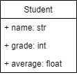

A Little Database¶
Make a class to store information about a student, which should handle a name, a grade classification, and an average.
UML¶

Create a list and add three Student objects to the list. Read in values for the three students and print them out again.
You may not use a loop.
Enter student 1's name: Esteban
Enter student 1's grade: 12
Enter student 1's average: 79.3
Enter student 2's name: Dave
Enter student 2's grade: 10
Enter student 2's average: 91
Enter student 3's name: Michelle
Enter student 3's grade: 11
Enter student 3's average: 98.6
The names are: Esteban Dave Michelle
The grades are: 12 10 11
The averages are: 79.3 91 98.6
©2021 Daniel Gallo
This assignment is licensed under a Creative Commons Attribution-NonCommercial-ShareAlike 3.0 United States License.

Adapted for Python from Graham Mitchell’s Programming By Doing